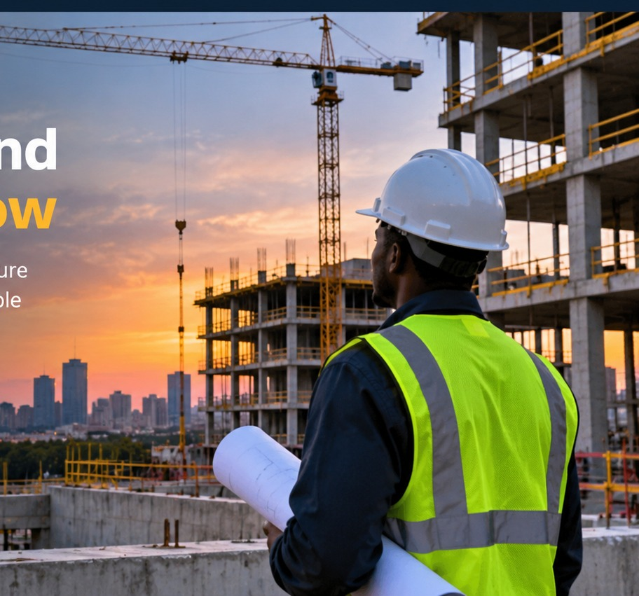

01
Structural Engineering
Structural engineers plan and analyze buildings and other structures so they can safely support the loads they are designed for. Their work includes selecting materials, understanding forces, and checking that structures meet safety requirements.